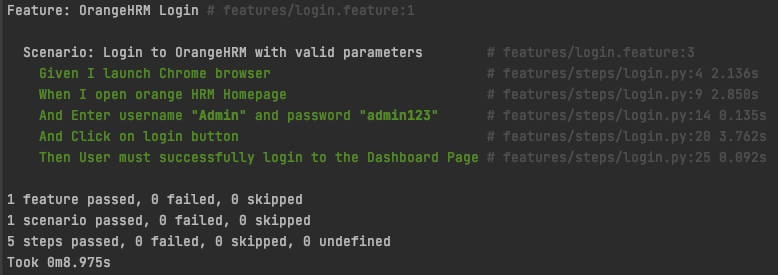
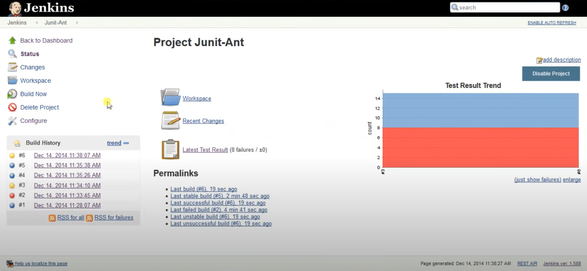
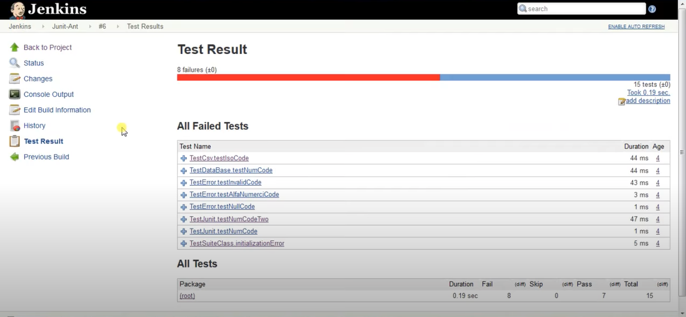
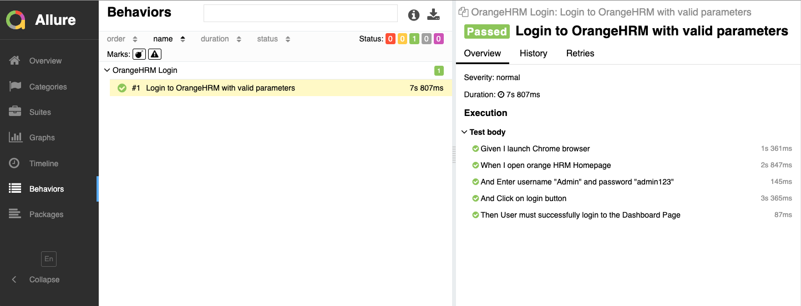

報表
可輸出的格式
behave -f help
Available formatters:
json JSON dump of test run
json.pretty JSON dump of test run (human readable)
null Provides formatter that does not output anything.
plain Very basic formatter with maximum compatibility
pretty Standard colourised pretty formatter
progress Shows dotted progress for each executed scenario.
progress2 Shows dotted progress for each executed step.
progress3 Shows detailed progress for each step of a scenario.
rerun Emits scenario file locations of failing scenarios
sphinx.steps Generate sphinx-based documentation for step definitions.
steps Shows step definitions (step implementations).
steps.catalog Shows non-technical documentation for step definitions.
steps.doc Shows documentation for step definitions.
steps.usage Shows how step definitions are used by steps.
tags Shows tags (and how often they are used).
tags.location Shows tags and the location where they are used.
pretty 報表
behave -f pretty

Junit 報表
behave --junit
會產生一個 xml 檔


Allure 報表
Step1: 安裝 allure-behave
pip install allure-behave
Step2：執行以下指令會產生一個 json 格式的檔案
behave -f allure_behave.formatter:AllureFormatter -o allure_data
Step3: 安裝 Allure
for Mace
brew install allure
Step4:將 json 轉成 html 報告
allure generate allure_data -o allure_html


練習題
- 產生 Junit 報表
- 產生 Allure json 檔
參考文獻
- https://github.com/behave/behave
- https://docs.qameta.io/allure/#_installing_a_commandline
- https://docs.qameta.io/allure/#_behave
補充：通知
除此之外，產出報表通常也會一併發送測試的通知結果。可以透過 CI 工具，例如 Jenkins 來達到排程執行和發送通知結果。